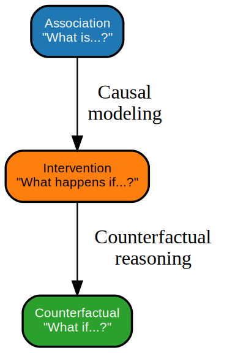
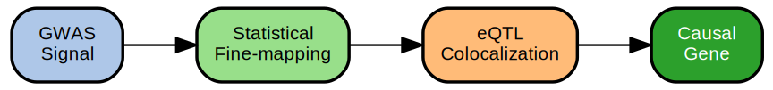
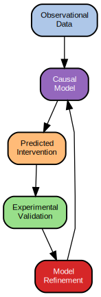
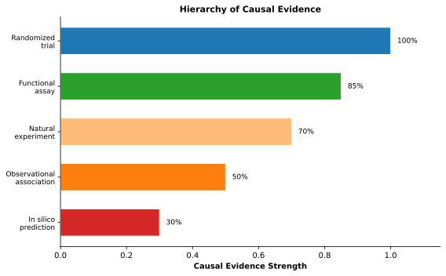

25 Causal Inference with Foundation Models
If you change the input, will the biology change the way the model predicts?
Prerequisites: This chapter builds on uncertainty quantification (Chapter 23), interpretability methods (Chapter 24), and an understanding of population confounding (Chapter 12). Familiarity with GWAS and fine-mapping concepts from Chapter 3 is assumed.
Learning Objectives: After completing this chapter, you should be able to:
- Distinguish between association, intervention, and counterfactual reasoning using Pearl’s ladder of causation
- Explain why predictive accuracy does not guarantee causal validity
- Apply Mendelian randomization concepts to assess causal claims from genomic data
- Evaluate when foundation model predictions support causal versus merely correlational conclusions
- Design validation strategies that test causal rather than predictive claims
Key Insight: Foundation models excel at learning associations from observational data, but clinical intervention requires causal reasoning. The gap between prediction (what do we observe?) and causation (what happens if we intervene?) is not a matter of model scale or data quantity—it reflects fundamentally different types of knowledge.
This question separates prediction from causation. A model can accurately predict that patients with a particular variant have worse outcomes without telling you whether correcting that variant would help them. The variant might cause disease, or it might merely correlate with ancestry, environment, or another genetic factor that actually causes disease. Predictive accuracy—even exceptional predictive accuracy—cannot distinguish between these possibilities.
The preceding chapters addressed how to trust model predictions: calibrated uncertainty tells us when models are confident (Chapter 23), and interpretability reveals what patterns drive predictions (Chapter 24). But clinical action requires more. It requires knowing that intervening on a predicted target will produce the intended effect.
25.1 Prediction vs. Causation
25.1.1 The Ladder of Causation
Judea Pearl proposed three levels of causal reasoning. Before reading about them, what do you think distinguishes “seeing” (observation) from “doing” (intervention) from “imagining” (counterfactual)? Why might a model that can answer observational questions fail at interventional ones?
Judea Pearl’s “ladder of causation” provides a framework for understanding the gap between prediction and intervention (pearl_book_2018?). The ladder has three rungs, each representing a qualitatively different type of reasoning:
Rung 1: Association answers questions of the form “What does seeing X tell me about Y?” This is the domain of standard predictive modeling. A foundation model that predicts gene expression from sequence operates at this level: given a sequence pattern, what expression level do we expect? Association captures correlation but remains agnostic about mechanism.
Rung 2: Intervention answers questions of the form “What happens to Y if I change X?” This requires understanding not just correlation but causal structure. Intervening on X breaks its correlations with upstream causes while preserving its effects on downstream variables. A model capable of intervention reasoning can predict not just what expression we observe given a sequence, but what expression would result if we edited the sequence.
Rung 3: Counterfactual answers questions of the form “What would Y have been if X had been different, given that we observed specific values?” Counterfactuals require reasoning about alternative histories for specific individuals, not just population-level effects. This is the realm of “What if this patient had received treatment A instead of treatment B?”
Most machine learning, including foundation models, operates at rung 1. Models learn associations from training data and predict outcomes for new inputs. Moving to rung 2 requires additional structure, typically assumptions about causal relationships encoded in directed acyclic graphs (DAGs) or identified through experimental interventions. Rung 3 remains largely out of reach for current methods outside carefully controlled settings.

A common misconception is that better predictions (rung 1) eventually enable intervention reasoning (rung 2). This is false. No amount of observational data can, by itself, distinguish correlation from causation. A model trained only on observational data cannot reliably predict intervention effects, regardless of its predictive accuracy. Moving up the ladder requires either (1) experimental intervention data, (2) causal assumptions encoded in the model, or (3) natural experiments like genetic randomization. Scale and accuracy at rung 1 do not substitute for the structural knowledge needed for rung 2.
25.1.2 Why Predictive Accuracy Does Not Equal Causal Understanding
A model can achieve excellent predictive accuracy while learning entirely non-causal relationships. Consider a gene expression predictor trained on population data. The model might learn that expression of gene A correlates with expression of gene B, and accurately predict B given A. But this prediction may reflect:
- Direct causation: A regulates B
- Reverse causation: B regulates A, and the model uses A as a proxy
- Common cause: Both A and B are regulated by an unmeasured factor C
- Selection bias: The training population was selected in a way that induces correlation
- Confounding: Population structure or batch effects create spurious associations (?sec-ch12-population-structure)
The distinction matters for intervention. If A directly causes B, then editing A will change B. If the correlation reflects a common cause, editing A will have no effect on B. A model that achieves 95% accuracy predicting B from A provides no information about which causal structure generated the correlation.
A foundation model accurately predicts that patients with high expression of gene X have poor cancer prognosis. Before targeting gene X therapeutically, what evidence would you want?
Consider: (1) Does X drive poor prognosis, or does aggressive cancer drive both X expression and poor prognosis? (2) What experimental or genetic evidence could distinguish these scenarios? (3) How would you test whether X is a driver versus a passenger?
Foundation models are particularly susceptible to learning non-causal patterns because they are trained on massive observational datasets that contain all of these correlation sources. The very scale that enables their predictive power also exposes them to more spurious associations. Confounding in genomic data is pervasive (Chapter 12), and foundation models lack architectural mechanisms to distinguish causal from confounded relationships.
25.1.3 The Clinical Stakes
The distinction between association and causation is not merely philosophical when models inform clinical decisions. A risk prediction model can be useful even if it captures only associations: knowing that a patient is high-risk enables closer monitoring regardless of whether we understand why (Chapter 27). But treatment decisions require causal reasoning.
Consider drug target selection. A gene whose expression is associated with disease progression might be a target, a biomarker, or neither. If the gene causally drives progression, inhibiting it could slow disease. If it is merely correlated (perhaps because both expression and progression reflect an upstream driver), inhibiting it will not help. If the association is confounded by treatment patterns in the training data, the gene may have no biological relationship to the disease at all.
The same logic applies to polygenic risk scores, variant interpretation, and therapeutic recommendations. Association supports screening and stratification. Causation supports intervention. Confusing the two leads to treatments that do not work, resources wasted on non-causal targets, and potential patient harm.
The table below summarizes when association versus causation matters for different clinical applications:
| Application | Association Sufficient? | Causation Required? | Example |
|---|---|---|---|
| Risk stratification | Yes | No | Identifying high-risk patients for closer monitoring |
| Biomarker for prognosis | Yes | No | Predicting disease progression |
| Diagnostic classification | Yes | No | Classifying tumor subtypes |
| Drug target selection | No | Yes | Choosing which gene to inhibit |
| Treatment recommendation | No | Yes | Selecting therapy for a patient |
| Variant pathogenicity for intervention | No | Yes | Gene therapy target selection |
25.2 Causal Methods in Genomics
Genomics has developed specialized methods for causal inference that leverage the unique properties of genetic data. Unlike typical observational studies where confounding is ubiquitous, genetic variants are assigned at conception through meiosis—a natural randomization process that makes genetics uniquely suited for certain causal inference approaches.
From Chapter 12: We learned that population structure creates spurious associations in GWAS. Before reading about Mendelian randomization, consider: How might the random assignment of alleles at conception help overcome confounding? What makes genetic variants different from environmental exposures?
25.2.1 Mendelian Randomization
Mendelian randomization involves subtle causal reasoning. If the three core assumptions and their violation modes are unfamiliar, consider reviewing the causal inference literature before proceeding. The key insight is that genetic variants serve as “natural experiments” because their assignment at conception is random with respect to most confounders.
Mendelian randomization (MR) exploits the random assortment of alleles during meiosis to create natural experiments (Davey Smith and Ebrahim 2003; lawlor_mendelian_2008?). If a genetic variant affects an exposure (e.g., gene expression, protein level, metabolite concentration), and that variant is associated with an outcome, then under certain assumptions we can infer that the exposure causally affects the outcome.
Think of the genetic variant as a randomly assigned ticket at birth. Imagine a lottery where some people receive tickets that increase their coffee consumption (a variant affecting caffeine metabolism). If ticket holders—who drink more coffee by chance of genetics, not by lifestyle choice—also have different heart disease rates, we have evidence that coffee consumption itself affects heart disease, not just that coffee drinkers happen to live differently in other ways. The “ticket” (genetic variant) was assigned before any confounders could arise, isolating the effect of the exposure.
The logic parallels randomized controlled trials. In an RCT, random treatment assignment ensures that treatment groups differ only in treatment received, not in confounders. In MR, random allele assignment at conception ensures that genotype groups differ only in genotype-driven exposure levels, not in confounders. The genetic variant acts as an “instrumental variable” that isolates the causal effect of the exposure.
MR relies on three core assumptions:
- Relevance: The genetic variant must be associated with the exposure
- Independence: The variant must not be associated with confounders of the exposure-outcome relationship
- Exclusion restriction: The variant must affect the outcome only through the exposure, not through other pathways (no horizontal pleiotropy—the situation where a genetic variant affects multiple traits through independent biological mechanisms, rather than through a single causal pathway)
Why are these three assumptions necessary? Relevance ensures the genetic variant actually affects the exposure of interest; without it, the variant provides no information about the exposure’s causal effect. Independence is why genetics provides a causal inference advantage: because alleles are randomly assigned at conception before environmental confounders arise, genetic instruments satisfy independence naturally for most confounders (though population structure can violate it). The exclusion restriction ensures we measure the exposure’s effect rather than some other effect of the variant—if a variant affects the outcome through multiple pathways, we cannot isolate which pathway matters.
Violations of these assumptions, particularly pleiotropy, limit MR’s applicability. Modern MR methods address this through multiple instruments, median-based estimators, mode-based estimators, and outlier detection that are robust to some violations (Bowden, Davey Smith, and Burgess 2015; Hartwig, Davey Smith, and Bowden 2017). Integration with foundation models, discussed below, offers new possibilities for instrument selection and pleiotropy detection.
25.2.2 Model-X Knockoffs for Controlled Variable Selection
Mendelian randomization exploits random allele assignment to isolate causal effects; fine-mapping exploits LD structure to identify causal variants. A third approach—Model-X knockoffs—provides a complementary framework for causal variable selection that addresses a specific limitation of standard GWAS: the inability to distinguish marginal association from conditional independence (Candès et al. 2018).
Standard GWAS tests each variant marginally: is this variant associated with the outcome? But in the presence of linkage disequilibrium, marginal p-values conflate direct effects with indirect correlation. A non-causal variant in high LD with a causal variant will show significant marginal association even though it provides no information about the outcome beyond what other variants already provide. This distinction—marginal versus conditional association—is precisely what causal inference requires.
Model-X knockoffs construct synthetic “knockoff” variables that preserve the correlation structure among features but are conditionally independent of the outcome given the original features. By comparing how strongly each original variant predicts the outcome versus its knockoff, the method identifies variants that provide genuine predictive signal beyond what their LD neighbors explain. The framework provides finite-sample false discovery rate (FDR) control without requiring knowledge of how the outcome depends on the variants—a model-free property that distinguishes it from parametric approaches.
Applied to Crohn’s disease GWAS data (~400,000 SNPs), knockoffs identified twice as many discoveries as marginal association testing while maintaining FDR control. Several discoveries were subsequently validated in larger meta-analyses, demonstrating that the method identifies true positives that marginal testing misses due to conservative thresholding across correlated variants.
For foundation model applications, knockoffs offer several advantages. First, they provide principled feature selection for high-dimensional embeddings where standard regularization may be insufficient—selecting which embedding dimensions carry genuine predictive signal versus which reflect noise that degrades performance through the dimensionality trap (?sec-ch21-noise-accumulation). Second, they can distinguish true epistasis from “phantom epistasis” created by LD confounding: apparent variant interactions that actually reflect joint tagging of single causal variants. Third, the framework extends naturally to testing whether foundation model attention patterns identify conditionally important positions rather than merely correlated ones.
The practical limitation is computational: knockoff construction requires estimating or specifying the joint distribution of variants, which scales poorly with variant count. Approximate methods using block-diagonal LD structure make genome-scale application tractable, but the approach is most powerful for targeted analysis of fine-mapped regions or selected feature sets rather than whole-genome screening.
Scenario: A foundation model predicts that inhibiting protein P will reduce cardiovascular disease (CVD) risk because P levels correlate with CVD in observational data. How would MR validate this?
Step 1: Identify genetic instruments. Find variants associated with P levels (pQTLs). Suppose variant rs12345 reduces P levels by 10%.
Step 2: Test association with outcome. In GWAS data, does rs12345 associate with reduced CVD risk?
Step 3: Calculate causal estimate. If rs12345 reduces P by 10% and CVD risk by 5%, the implied causal effect is: 5%/10% = 0.5 (50% reduction in CVD per unit reduction in P).
Step 4: Check assumptions. Is rs12345 pleiotropic? Does it affect CVD through other pathways? MR-Egger and weighted median methods can test for pleiotropy.
Interpretation: If MR supports causality, P is a promising drug target. If not, the observational correlation may reflect confounding, and inhibiting P may not reduce CVD.
GWAS identifies regions containing multiple correlated variants. Before reading about fine-mapping, predict: What information would help us identify which specific variant is causal? Why might simply choosing the variant with the strongest p-value be misleading?
25.2.3 Fine-Mapping for Causal Variants
Genome-wide association studies identify genomic loci associated with traits but typically cannot pinpoint causal variants. Most GWAS signals arise from common variants in linkage disequilibrium (LD) with the true causal variant(s), creating “association signals” that span many correlated SNPs (Section 3.3). Fine-mapping aims to identify which variant(s) within an associated locus are causal.
Statistical fine-mapping methods compute posterior probabilities that each variant is causal given the observed association statistics and LD structure (Maller et al. 2012; Benner et al. 2016). These methods output credible sets: minimal sets of variants that contain the causal variant(s) with high probability (typically 95%). Smaller credible sets indicate more confident localization.
Why does fine-mapping work, and why does it sometimes fail? Fine-mapping exploits the fact that causal variants generate stronger association signals than non-causal variants that merely correlate through LD. By modeling the LD structure explicitly, fine-mapping can disentangle which variant is most likely causal. The method fails when LD is too tight (multiple variants are nearly perfectly correlated, making them statistically indistinguishable) or when multiple causal variants exist in the same region (violating the typical single-causal-variant assumption).
Functional annotations dramatically improve fine-mapping. Variants in regulatory elements, coding regions, or conserved sequences are more likely to be causal than variants in unconstrained regions. Foundation models can provide these annotations at unprecedented resolution, predicting variant effects on chromatin accessibility, transcription factor binding, splicing, and protein function (Chapter 17). Integrating foundation model predictions with statistical fine-mapping creates more powerful methods for causal variant identification.
25.2.4 From GWAS to Causal Genes
Even after fine-mapping identifies likely causal variants, connecting variants to causal genes remains challenging. Most GWAS signals fall in non-coding regions, often affecting expression of genes other than the nearest gene through long-range enhancer-promoter interactions. The “GWAS-to-gene” problem asks: given a causal variant, which gene(s) does it affect, and how?
Multiple lines of evidence inform gene assignment:
Expression quantitative trait loci (eQTLs): Variants that affect expression of nearby genes suggest regulatory mechanisms. Colocalization of GWAS and eQTL signals supports a shared causal variant affecting both expression and phenotype (giambartolomei_bayesian_2014?).
Chromatin interaction data: Hi-C and related methods identify physical contacts between enhancers and promoters (Section 20.2.1), enabling annotation of which genes regulatory variants might contact.
Coding variant enrichment: When fine-mapped variants include coding variants, the affected gene is immediately implicated.
Foundation model predictions: DNA sequence models can predict effects of non-coding variants on regulatory element activity and gene expression, providing computational support for regulatory mechanisms (Chapter 16, Chapter 17).
Integrating these evidence types into coherent gene prioritization frameworks remains an active area. No single method provides definitive causal gene assignment; converging evidence across multiple approaches provides the strongest support.

From Chapter 3: Recall that linkage disequilibrium (LD) causes multiple variants to be correlated. Now consider: How does fine-mapping use LD structure to identify causal variants? Why would tight LD make causal variant identification harder even with perfect statistical power?
25.3 Foundation Models and Causality
25.3.1 Can Foundation Models Learn Causal Structure?
Foundation models are trained on observational data through objectives like next-token prediction or masked element reconstruction. These objectives do not distinguish causal from correlational relationships. A DNA language model trained on sequences across species learns patterns that reflect evolutionary conservation, but conservation conflates multiple causal processes: purifying selection against deleterious mutations, hitchhiking of neutral variants with beneficial ones, and mutational biases that vary across the genome.
Recent theoretical work examines conditions under which causal structure emerges from observational learning. In language models, there is evidence that models trained on sufficiently diverse text corpora learn something resembling causal structure, because text describes causal relationships and generating coherent text requires modeling them (kiciman_causal_2023?). Whether similar arguments apply to genomic sequence is unclear. Genomic sequences do not describe causal relationships; they embody them. A regulatory element’s sequence determines its function, but this determination is mediated by cellular machinery that the sequence model never observes.
Empirical evidence suggests foundation models capture aspects of causal structure but do not reliably distinguish causal from correlational patterns. Models trained on expression data learn gene-gene relationships that sometimes reflect regulatory causation and sometimes reflect co-regulation by shared factors. Models trained on perturbation data (e.g., CRISPR screens) show improved ability to predict intervention effects, suggesting that interventional training data is necessary for interventional prediction capability.
Consider two foundation models: Model A is trained on observational gene expression data (measuring expression without perturbations). Model B is trained on Perturb-seq data (expression measured after CRISPR knockouts).
- Which model is more likely to learn causal gene-gene relationships? Why?
- If Model A learns that genes X and Y are co-expressed, what causal scenarios could explain this?
- If Model B learns that knocking out X changes Y expression, what does this tell us about causality?
The key distinction: Model A learns associations that could reflect common causes; Model B learns from interventions that directly test causal relationships.
- Model B is more likely to learn causal relationships because interventional data (CRISPR knockouts) directly tests causation by breaking correlations with confounders. (2) X and Y co-expression in observational data could reflect: X regulates Y, Y regulates X, both are regulated by a common upstream factor, or spurious correlation from batch effects. (3) If knocking out X changes Y expression, this provides strong evidence that X causally influences Y (either directly or through intermediates), because the intervention breaks non-causal correlations.
25.3.2 In-Silico Perturbation Prediction
You want to know if editing a regulatory element will increase expression of a therapeutic gene. The experiment would take months and cost thousands of dollars. Can you get a useful prediction first? If a model could accurately predict the effect of your edit before you make it, you could prioritize the most promising candidates and avoid wasting resources on variants that will not work.
In-silico perturbation prediction uses foundation models to predict effects of genetic or molecular changes without performing experiments. This directly addresses rung 2 of the causal ladder: “What happens if we change X?”
Several approaches exist:
Sequence-level perturbation: DNA and RNA foundation models can predict effects of sequence mutations on molecular phenotypes like chromatin accessibility, transcription factor binding, and splicing (Chapter 17). These predictions are inherently counterfactual: the model compares predicted output for reference vs. alternate allele. When validated against experimental perturbations, such predictions can support causal reasoning about regulatory mechanisms.
Gene-level perturbation: Single-cell foundation models trained on expression data can be prompted with in-silico gene knockouts or overexpression, generating predictions of downstream expression changes (theodoris_transfer_2023?). These predictions extrapolate from patterns learned in observational data, with accuracy depending on whether observational patterns reflect causal regulation.
Embedding-space perturbation: Models that embed cells, genes, or sequences in latent spaces enable perturbation by arithmetic operations on embeddings. Subtracting a “disease” direction and adding a “healthy” direction generates predictions of therapeutic effects. Such approaches assume linear structure in embedding space that may not hold.
All in-silico perturbation methods face a fundamental limitation: they cannot validate their own causal accuracy. A model that predicts X causes Y might be correct (X causes Y), might be learning reverse causation (Y causes X, so perturbing X in the model disrupts learned correlations), or might be learning confounded correlations (neither causes the other). External validation through experimental perturbation is necessary to establish causal accuracy.
The table below compares different in-silico perturbation approaches:
| Approach | Input | Output | Causal Validity | Validation Required |
|---|---|---|---|---|
| Sequence-level (e.g., Enformer) | Reference vs. alternate allele | Predicted molecular phenotype change | Moderate—predicts direct sequence effects | MPRA, allelic expression |
| Gene-level (e.g., Geneformer) | In-silico knockout | Predicted expression changes | Low—extrapolates from correlations | Perturb-seq, CRISPR screens |
| Embedding arithmetic | Vector operations in latent space | Transformed cell state | Low—assumes linear embedding structure | Experimental perturbation |
25.3.3 Counterfactual Reasoning Limitations
A patient received drug A and her tumor progressed. Her oncologist wonders: would drug B have worked better? This is not a question about average treatment effects in a population—it is about what would have happened to this specific patient under a different treatment. No dataset contains this answer because it requires observing the same patient under two mutually exclusive conditions simultaneously. This is the counterfactual problem, and it represents a fundamental barrier even for the most sophisticated models.
Counterfactual reasoning—rung 3 of the causal ladder—asks what would have happened under alternative circumstances for a specific individual or instance. This is qualitatively harder than intervention reasoning, which asks about population-level effects of interventions.
Foundation models face fundamental barriers to counterfactual reasoning:
Identifiability: Counterfactual quantities are often not identifiable from observational data even with perfect knowledge of the joint distribution. Learning from data cannot overcome this barrier.
Individual-level noise: Counterfactuals require reasoning about stochastic processes at the individual level. What would this specific cell’s expression have been if a specific gene were knocked out? The answer depends on molecular noise that models cannot capture from population-level training.
Temporal specificity: Counterfactuals often involve specific timepoints and histories. “What would this patient’s outcome have been if treatment started earlier?” requires reasoning about patient-specific trajectories that models trained on cross-sectional data cannot address.
These limitations suggest that foundation models can at best approximate counterfactual reasoning for population-level interventions but cannot provide reliable individual-level counterfactuals without additional assumptions or data. Clinical applications requiring individual counterfactual reasoning (e.g., precision treatment optimization) must acknowledge this fundamental limitation.
Individual counterfactuals (“What would have happened to this patient if…?”) require information that does not exist in any dataset: the outcome under the path not taken. This is not a data limitation that more training can overcome—it is a logical impossibility. Foundation models can estimate population-average treatment effects (how do patients like this one respond on average?) but cannot answer individual counterfactuals without additional structural assumptions. Clinical systems claiming to provide personalized counterfactual predictions should be scrutinized for what assumptions they make to bridge this logical gap.
25.4 Intervention Prediction
Despite the limitations above, foundation models can contribute substantially to intervention prediction when combined with appropriate experimental data, validation frameworks, and acknowledgment of causal assumptions.
25.4.1 CRISPR Screen Analysis with Foundation Models
You have run a genome-wide CRISPR screen and identified 200 genes whose knockout affects cancer cell viability. But which of these are direct drivers versus downstream consequences? Which hits will replicate in patients rather than just in cell lines? And for the thousands of genes you could not include in this screen, can you predict which would have shown effects?
CRISPR screens provide large-scale interventional data: systematic gene knockouts or knockdowns across cells, with readouts including viability, expression, and phenotype (shalem_genome-scale_2014?; adamson_multiplexed_2016?). This data is inherently causal—it captures effects of interventions rather than mere associations. Foundation models can help interpret, extend, and transfer insights from these screens.
Foundation models enhance CRISPR screen analysis in several ways:
Screen design: Models can predict which guide RNAs will effectively perturb target genes, improving screen efficiency. Expression foundation models can predict baseline expression levels that affect perturbation detectability.
Hit interpretation: When screens identify genes whose perturbation affects a phenotype, foundation models help interpret mechanism. Which regulatory networks are affected? What downstream targets change? Integration with interaction networks (Section 21.2.2) contextualizes screen hits.
Transfer and extrapolation: Foundation models trained on screens in one context (cell type, condition) can predict perturbation effects in new contexts. This transfer capability enables virtual screens that guide experimental prioritization.
Combination effects: Predicting effects of multi-gene perturbations from single-gene data is a key challenge. Foundation models that learn gene-gene relationships from expression data can model epistatic interactions, though prediction accuracy for combinations remains limited.
Importantly, foundation models trained on CRISPR screen data acquire interventional rather than merely associational patterns. This provides a path toward causal prediction capability: train on interventional data to learn interventional structure.
25.4.2 Drug Response Prediction
A patient has a tumor with an unusual mutation profile. Several drugs might work, but which one? Testing all options experimentally would take months the patient may not have. If you could predict which drugs the tumor would respond to based on its molecular profile, you could prioritize the most promising option first. But here lies the challenge: observed correlations between tumor features and drug response might reflect the drugs actually used (selection bias), patient characteristics that affect both tumor biology and outcomes (confounding), or genuine causal sensitivity—and only the last matters for choosing therapy.
Predicting how patients or tumors will respond to drugs is a central challenge in precision oncology and pharmacogenomics. Drug response has clear causal structure: the drug causes the response. Foundation models can contribute to response prediction by learning patterns that generalize across drugs, cell lines, and patients.
Approaches include:
Chemical-biological foundation models: Models that jointly embed drug structures and biological contexts (gene expression, mutations) can predict response to drugs not seen during training (zitnik_modeling_2018?). Transfer from chemical structure to biological effect leverages foundation model representations of both domains.
Expression-based response models: Single-cell foundation models can predict expression changes induced by drug treatment, enabling in-silico drug screening. The accuracy of these predictions depends on whether training data captures the relevant drug-gene relationships.
Genomic response predictors: Foundation models pretrained on DNA sequence can be fine-tuned to predict drug response from tumor genomes, learning patterns of sensitivity-conferring and resistance-conferring mutations.
Drug response prediction illustrates both the promise and limitations of foundation models for causal tasks. Models can learn generalizable patterns of drug-gene interaction, but validation requires clinical trials that are expensive and slow. The gap between in-silico prediction and validated clinical utility remains substantial (Chapter 29).
A foundation model predicts that tumors with mutation M will respond to drug D. Before using this prediction clinically:
- What training data would make this prediction more trustworthy? (Hint: observational vs. interventional)
- How would you distinguish whether M predicts response because M causes sensitivity, or because M correlates with some other feature that causes sensitivity?
- What validation hierarchy would you design? Consider in-vitro, in-vivo, and clinical evidence.
25.4.3 Closed-Loop Experimental Validation
A foundation model predicts that knocking out gene X will sensitize cancer cells to drug Y. You test this prediction experimentally and find it is wrong. What now? You could dismiss the model, but a smarter approach is to use this failure to improve future predictions. The model was wrong because its training data lacked the relevant causal relationship. By feeding the experimental result back into training, you give the model interventional ground truth it could never learn from observational data alone.
The most powerful paradigm for developing causally accurate foundation models is closed-loop integration of prediction and experiment. Rather than training models on fixed datasets and deploying them for prediction, closed-loop systems iterate between:
- Prediction: Model proposes interventions likely to be informative or effective
- Experiment: Proposed interventions are tested in automated assay platforms
- Observation: Experimental outcomes are recorded
- Update: Results update model parameters or inform next predictions
This design-build-test-learn (DBTL) cycle is discussed extensively in Section 30.6 for sequence design applications. The same framework applies to causal learning: by iterating between prediction and experimental validation, models can accumulate interventional data that supports increasingly accurate causal predictions.
Closed-loop systems face practical challenges: experimental throughput limits iteration speed, costs constrain scale, and defining informative interventions requires balancing exploration and exploitation. But the fundamental advantage—learning from interventional rather than observational data—addresses the core limitation of standard foundation model training.

25.5 Causal Discovery
Suppose you measure expression of 20,000 genes across thousands of cells and find that genes A and B are correlated. Does A regulate B? Does B regulate A? Are both controlled by an upstream regulator C that you did not measure? Without perturbation experiments—which are expensive and cannot test all 400 million possible pairwise relationships—how would you even begin to answer this question?
Causal discovery aims to learn causal structure itself from observational data: which variables cause which others? In genomics, this includes learning regulatory networks, identifying driver mutations, and discovering mechanistic relationships. The challenge is extracting directional, causal information from data that only shows correlation.
25.5.1 Learning Regulatory Networks
A cancer researcher identifies a transcription factor that is consistently overexpressed in aggressive tumors. Is this factor driving tumor progression, or is it merely a downstream consequence of some other oncogenic program? If you could reconstruct the regulatory network—the web of cause-and-effect relationships among genes—you could trace the chain of causation and identify the true driver. But how do you learn such a network from expression data alone?
Gene regulatory networks describe causal relationships among genes: transcription factors regulate targets, signaling molecules activate pathways, metabolic enzymes control flux. Learning these networks from data is a foundational problem in systems biology—one where foundation models offer new approaches but also face fundamental limitations.
Classical approaches infer networks from expression correlation, mutual information, or regression-based methods like GENIE3 (huynh-thu_inferring_2010?). These methods identify associations but struggle to distinguish causal direction and are confounded by common regulators.
Foundation models offer new approaches to regulatory network inference:
Attention-based structure learning: Transformer foundation models learn attention patterns over genes. These attention weights can be interpreted as soft regulatory relationships, with attention from gene A to gene B suggesting A influences B’s representation. However, attention weights reflect model computation, not necessarily biological causation (jain_attention_2019?).
Perturbation-guided learning: Training foundation models on perturbation data (e.g., Perturb-seq, which combines CRISPR perturbation with single-cell RNA-seq) enables learning of directed regulatory relationships. If knocking out A changes B, A to B is supported. Foundation models scale this reasoning across thousands of perturbations.
Multi-task learning: Models trained to simultaneously predict multiple molecular phenotypes (expression, chromatin state, binding) may learn shared structure reflecting underlying regulatory networks.
Network inference from foundation models remains an active research area. Validation against gold-standard regulatory relationships (e.g., ChIP-seq, perturbation experiments) is essential for assessing accuracy.
From Chapter 24: We learned that attention weights in transformers show which inputs the model considers important. Now think critically: If attention from gene A to gene B is high, does this prove A regulates B? What’s the difference between computational attention and biological causation?
25.5.2 Temporal Causality
You observe that in differentiating stem cells, transcription factor A rises before gene B is expressed. Does A activate B? Or do both respond to an earlier signal, with A simply responding faster? In cross-sectional snapshots, you cannot tell—both scenarios produce identical correlations. But in time-series data, the ordering matters: if A consistently rises before B changes across many conditions, this temporal precedence provides evidence for causal direction that pure correlation cannot.
Time provides a strong constraint on causal direction: causes precede effects. Time-series data in genomics—developmental trajectories, drug response time courses, circadian cycles—enable causal inference approaches that exploit temporal structure.
Granger causality tests whether past values of X improve prediction of future Y beyond what past Y alone provides (granger_investigating_1969?). The underlying logic is that causes must precede their effects—like how dark clouds appear before rain, not after. If you can better predict tomorrow’s rain by knowing today’s cloud patterns than by knowing only yesterday’s rain, clouds are “Granger-causing” rain. In genomics, this approach identifies genes whose expression changes precede changes in other genes: if knowing gene A’s expression at time 1 helps predict gene B’s expression at time 2 (beyond what B’s own history provides), this suggests A may regulate B.
Dynamical foundation models trained on time-series single-cell data (e.g., RNA velocity measurements) learn temporal dynamics and can be queried for causal relationships (la_manno_rna_2018?). By modeling how expression states evolve, these models implicitly learn which genes drive transitions.
Structural causal models with temporal constraints encode the assumption that causes precede effects, enabling stronger causal conclusions from time-series observational data. Foundation models can be trained with temporal structure as an architectural prior.
Temporal approaches require appropriate data: longitudinal measurements, developmental time courses, or perturbation time series. Cross-sectional data, which comprises most genomic datasets, cannot support temporal causal inference directly.
25.5.3 Multi-Omics Causal Structure
A genetic variant associates with both mRNA levels of gene X and disease risk. Does the variant cause disease by altering X’s expression? Or does it affect disease through some other pathway entirely, with the mRNA association being a red herring? If you also measure protein levels and find the variant affects mRNA but not protein—perhaps due to post-transcriptional regulation—you have learned something crucial: the mRNA association cannot explain the disease effect, and you should look elsewhere.
Different molecular modalities (DNA, RNA, protein, metabolite) are linked by known causal relationships: DNA encodes RNA, RNA is translated to protein, proteins catalyze metabolic reactions. Multi-omics data that measures multiple modalities simultaneously enables causal inference that leverages this structure.
For example, eQTL analysis identifies genetic variants that causally affect expression. Extending to protein quantitative trait loci (pQTLs) and metabolite QTLs (mQTLs) traces causal effects from genome through transcriptome to proteome to metabolome. Discordance between levels (e.g., an eQTL without corresponding pQTL) suggests post-transcriptional regulation.
Foundation models trained on multi-omic data can learn cross-modality relationships. Whether these relationships are causal depends on training: models trained on QTL data learn causal structure because genetic variation is the instrument; models trained on matched multi-omic profiles learn associations that may reflect common causes.
Multi-omic integration for causal inference is discussed further in Chapter 22. Foundation models can integrate across modalities but require causal validation as for single-modality models.
The central dogma (DNA to RNA to protein) provides causal direction: genetic variants cause expression changes, which cause protein level changes.
- If a variant associates with both mRNA and protein levels, what additional evidence would distinguish direct transcriptional effects from post-transcriptional regulation?
- If a variant associates with mRNA but not protein levels, what biological mechanisms might explain this?
- How could a foundation model leverage this multi-omic structure to improve causal predictions?
25.6 Clinical Implications
25.6.1 Drug Target Validation Evidence Hierarchy
Your foundation model identifies protein X as strongly associated with disease progression. Should you invest $50 million to develop a drug targeting X? Association alone cannot answer this question. What if X is merely a biomarker of aggressive disease, not a driver? What if inhibiting X has no effect—or makes things worse? Before committing to expensive clinical development, you need to climb from association toward causal evidence.
Drug development requires confidence that a target is causally involved in disease—that modulating the target will affect disease outcomes. Foundation model predictions contribute to this evidence base but sit within a broader hierarchy of target validation evidence:
Weakest evidence: Association. The target’s expression or activity correlates with disease in observational data. Foundation models excel at identifying such associations but cannot distinguish causal from confounded relationships.
Moderate evidence: Mendelian randomization. Genetic instruments affecting the target causally affect disease risk. This provides human in-vivo evidence of causation but may reflect effects of lifetime exposure rather than therapeutic intervention.
Strong evidence: Perturbation experiments. Knocking out or modulating the target in cellular or animal models affects disease-relevant phenotypes. Foundation models trained on perturbation data can predict such effects but require experimental validation.
Strongest evidence: Clinical intervention. Drugs targeting the mechanism show efficacy in clinical trials. This is the ultimate validation but comes late in development.
Foundation models can accelerate target validation by integrating across evidence types: identifying associations, predicting perturbation effects, and prioritizing candidates for experimental validation (Chapter 29). But they cannot substitute for experimental and clinical evidence—they can only prioritize which targets receive experimental investment.

When presenting foundation model predictions to clinical collaborators or in publications:
Distinguish association from causation explicitly: “The model predicts that variant X associates with outcome Y” is different from “inhibiting X will improve Y.”
State what validation would be needed: “This prediction suggests X as a candidate target; validation would require [MR analysis / perturbation experiment / clinical trial].”
Quantify confidence appropriately: Predictive confidence (model calibration) is not causal confidence. A well-calibrated association prediction may still reflect confounding.
Acknowledge the evidence tier: “This is associational evidence; stronger causal evidence would require genetic instruments or experimental perturbation.”
25.6.2 Regulatory Requirements for Causal Claims
You have built an AI system that predicts which patients will benefit from a particular therapy. Is this a risk stratification tool that flags high-risk patients for clinical review? Or is it a treatment recommendation system that claims to know what intervention will help? The distinction matters enormously for regulatory approval: the first requires demonstration of predictive accuracy, while the second requires evidence that following the recommendations actually improves outcomes.
Regulatory agencies evaluate medical AI systems based on their intended use. Systems that make causal claims face higher evidentiary standards than purely predictive systems.
A risk stratification model that identifies high-risk patients without claiming to identify treatable causes requires validation of predictive accuracy: does the model correctly identify who is at risk? This is achievable through retrospective validation on held-out data.
A treatment recommendation model that suggests interventions based on predicted causal effects requires validation of causal accuracy: do the recommended interventions actually produce the predicted effects? This requires prospective trials comparing outcomes for patients who receive model-guided vs. standard treatment.
Current regulatory frameworks (Section 26.1) do not fully distinguish predictive from causal validation, but the distinction has practical implications. Foundation model predictions deployed as associational tools (risk scores, phenotype predictions) face achievable validation requirements. The same models deployed as causal tools (treatment recommendations, target prioritization) face requirements that may be impractical without substantial prospective evidence.
Developers of foundation model systems should consider intended use carefully. Claiming causal capabilities that cannot be validated creates both regulatory risk and potential patient harm. Limiting claims to predictive performance, while acknowledging causal limitations, provides a more defensible regulatory path while appropriately caveating clinical use.
25.7 Looking Forward
Causal inference remains one of the deepest challenges in genomic foundation models. The gap between prediction (rung 1) and intervention (rung 2) is not merely a matter of scale or compute—it reflects fundamental differences in what can be learned from observational vs. interventional data. Foundation models trained on observational genomic sequences can achieve remarkable predictive accuracy while remaining unreliable for causal reasoning.
Three paths forward seem most promising:
Training on interventional data: Foundation models trained on CRISPR screens, drug response data, and other perturbation experiments acquire interventional rather than merely associational patterns. As high-throughput perturbation platforms generate more data, foundation models trained on this data will become increasingly capable of causal prediction.
Integration with causal inference methods: Combining foundation model predictions with established causal inference frameworks (Mendelian randomization, fine-mapping, structural causal models) leverages the complementary strengths of each approach. Foundation models provide scale and pattern recognition; causal frameworks provide principled reasoning about intervention.
Closed-loop experimental systems: Iterating between foundation model prediction and experimental validation creates feedback loops that progressively improve causal accuracy. Such systems require infrastructure investment but offer a path to causally validated foundation models.
The frontier challenges in causal reasoning are examined further in Section 31.1.3. For now, practitioners should approach foundation model predictions with appropriate epistemic humility: impressive predictive accuracy does not imply causal validity, and clinical interventions require causal rather than merely correlational evidence.
Before reviewing the summary, test your recall:
- Describe Pearl’s three rungs of the ladder of causation. Why can’t you reach Rung 2 (intervention) from Rung 1 (association) through more data or better prediction accuracy alone?
- A foundation model achieves 95% accuracy predicting disease outcome from gene expression. List three different causal structures that could produce this correlation, and explain why they matter for treatment decisions.
- What is Mendelian randomization, and what properties of genetic variants make it a valid causal inference tool?
- How can foundation models be trained to support causal reasoning? What types of training data would enable movement from associational to interventional predictions?
- Rung 1 (Association): P(Y|X)—observing X tells us about Y. Rung 2 (Intervention): P(Y|do(X))—changing X affects Y. Rung 3 (Counterfactual): What would Y have been for this individual if X were different? More data at Rung 1 cannot reach Rung 2 because observational data conflates causal and confounded associations; no amount of correlation data distinguishes causation from common causes without interventional data or causal assumptions. (2) Three causal structures: (a) Gene expression directly causes disease—treatment targeting the gene would work; (b) Disease causes gene expression—targeting the gene would not help; (c) Both are caused by an unmeasured factor—gene is a biomarker but not a therapeutic target. These distinctions are critical for choosing whether to develop therapies targeting the gene. (3) Mendelian randomization uses genetic variants as instrumental variables to infer causation. Key properties: alleles are randomly assigned at conception (independence from confounders), variants affect an exposure (relevance), and under the exclusion restriction, variants affect outcomes only through the exposure. This creates a natural experiment analogous to randomized trials. (4) Train on interventional data: CRISPR screens, drug response experiments, and other perturbation data where effects of interventions are directly observed. Models trained on observational data learn associations; models trained on interventional data learn causal effects. Closed-loop systems that iterate between prediction and experimental validation provide the strongest path.
This chapter examined the gap between association (what we observe) and causation (what happens if we intervene)—a distinction critical for clinical application of foundation models.
Key takeaways:
Pearl’s ladder of causation distinguishes association (rung 1), intervention (rung 2), and counterfactual reasoning (rung 3). Foundation models trained on observational data operate at rung 1; moving higher requires interventional data or causal assumptions.
Predictive accuracy does not imply causal validity. A model that perfectly predicts Y from X may be learning direct causation, reverse causation, common causes, or confounding. Only external validation can distinguish these scenarios.
Genomics offers unique causal inference tools. Mendelian randomization exploits genetic randomization at conception; fine-mapping localizes causal variants; multi-omic QTL analysis traces causal chains across molecular layers.
Foundation models can contribute to causal inference through in-silico perturbation prediction, CRISPR screen analysis, and drug response modeling—but only when combined with appropriate validation against experimental ground truth.
Clinical stakes are high. Association-based predictions support screening and stratification. Causal claims support intervention. Confusing the two leads to ineffective treatments and potential patient harm.
Three paths forward: Training on interventional data, integrating with causal inference frameworks, and building closed-loop experimental systems all offer routes toward causally valid foundation models.
Looking ahead: Section 26.1 examines how regulatory frameworks evaluate AI systems, with implications for causal claims. Chapter 29 applies these concepts to drug target identification. Section 31.1.3 explores frontier challenges in causal reasoning for genomics.